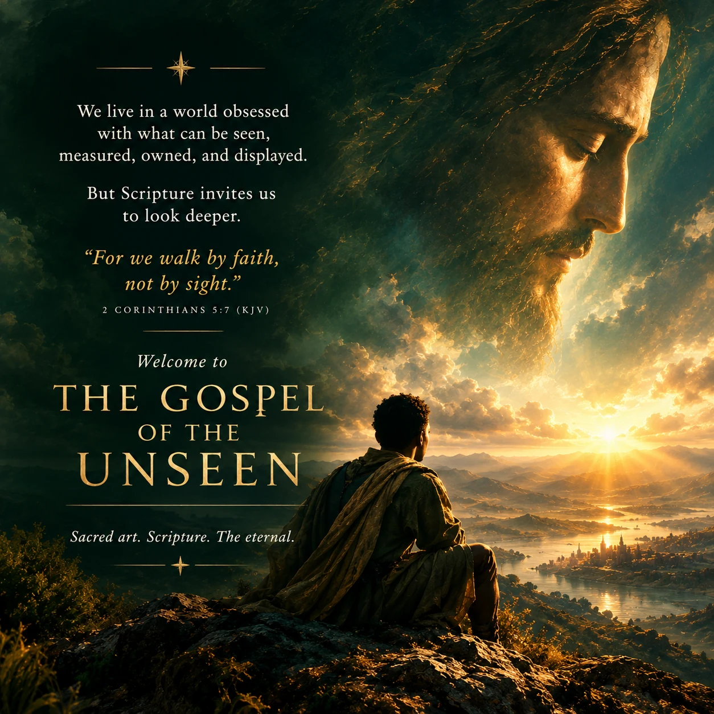
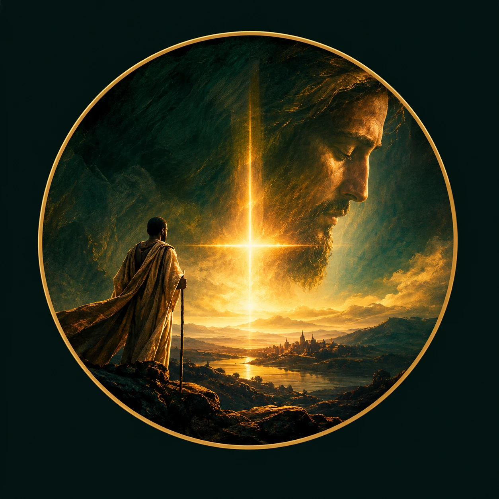
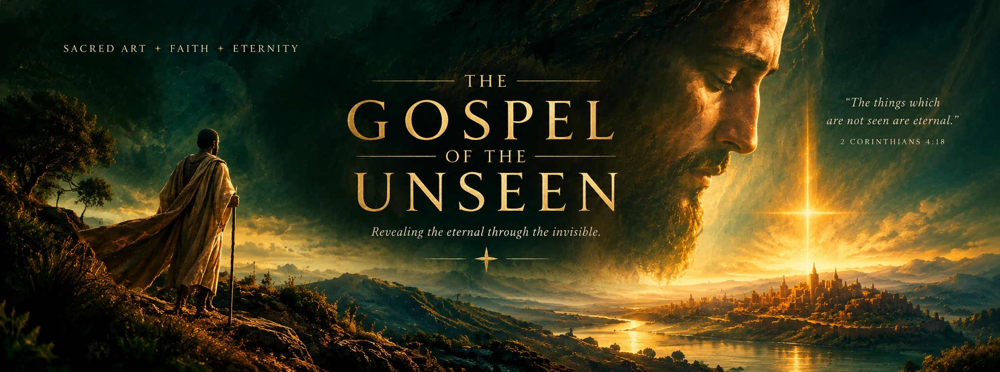

01When sight is not enough
What does it mean to walk by faith without pretending that the road is always clear?
FOR THE SEEKING SOUL
A quiet place to encounter the eternal through Scripture, sacred art, and faithful contemplation.

“For we walk by faith,
not by sight.”
FIRST, THE WORD
We begin with Scripture—not as a decorative quotation, but as the foundation for every reflection that follows.
Continue into contemplation“For we walk by faith, not by sight.”
2 CORINTHIANS 5:7 · KING JAMES VERSION
THE JOURNAL
Reflections rooted in the biblical text, made for slower reading and a more attentive life.

01What does it mean to walk by faith without pretending that the road is always clear?
On secret prayer, quiet faithfulness, and the freedom of living before God rather than an audience.
Christian hope does not deny darkness. It turns our attention toward the Light.
Every contemplation begins with a passage, distinguishes the text from our reflection, and ends with an invitation to live what we have read.
Our editorial promise
THE SACRED ARTS
Art can slow the eye, quiet the noise, and invite us to return to the biblical story with renewed attention. It is a companion to contemplation—not a substitute for truth.
Enter the galleryA PRACTICE OF ATTENTION
Choose a doorway. Read the passage in context. Sit with it. Carry its wisdom into the world.
WHY WE EXIST
The Gospel of the Unseen is an independent sacred arts journal devoted to the beauty, truth, and Good News of Jesus Christ.
We bring Scripture, original visual art, and thoughtful contemplation into conversation—without confusing artistic imagination with biblical revelation. We want beauty to awaken attention, knowledge to deepen faith, and faith to become love of neighbour.
A LETTER FOR THE JOURNEY
Occasional Scripture, sacred art, and reflections for a more attentive life.
A quiet letter, not a noisy inbox. The mailing list connection will be enabled before public launch.